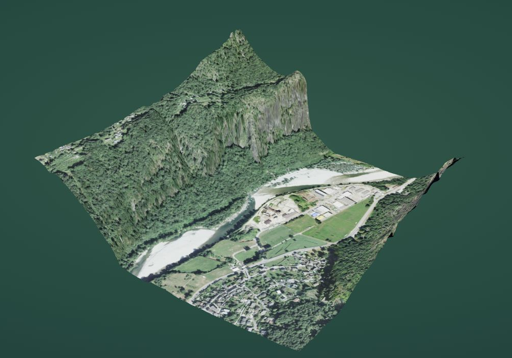
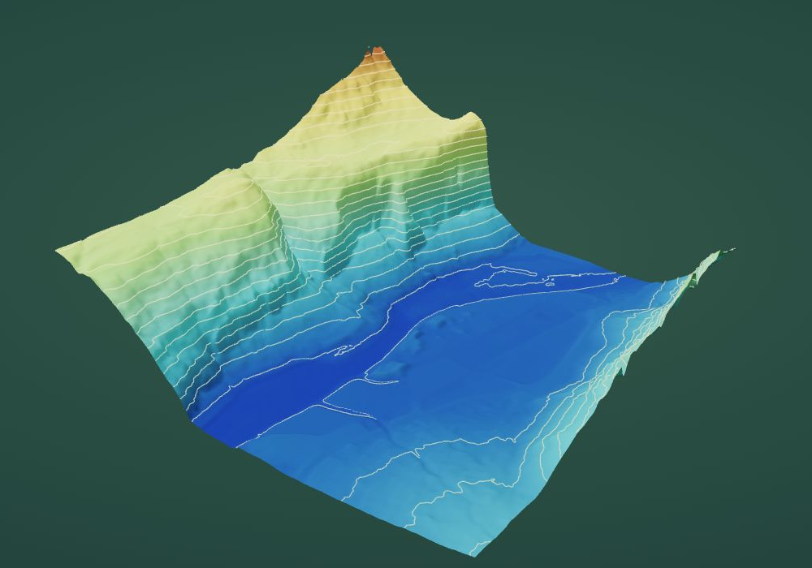
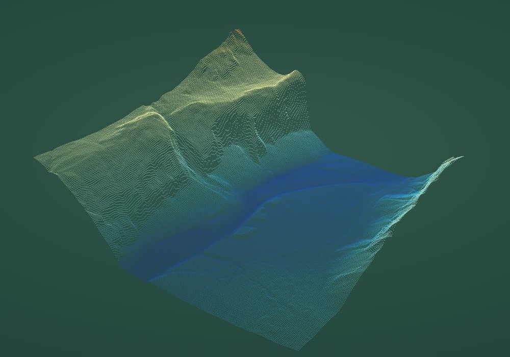
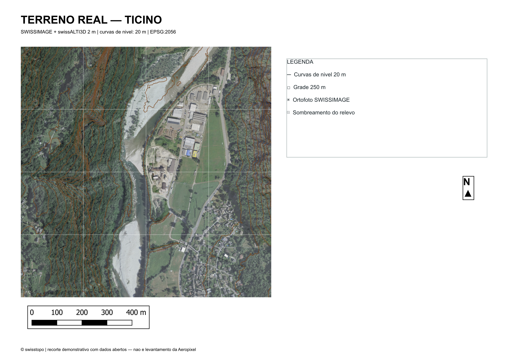

Preparar
Conferir recorte, coordenadas, unidades e cobertura dos arquivos processados.
PROVA DE CONCEITO · DYEISON MLENEK
Uma rotina assistida para o fluxo da Aeropixel. O projeto de cemitérios será o primeiro teste com dados reais.
Piloto delimitado. Resultado comparado. Rotina instalada na equipe.
01 / FLUXO PROPOSTO

Conferir recorte, coordenadas, unidades e cobertura dos arquivos processados.

Apoiar a vetorização de uma classe escolhida com a equipe.

Conferir identificadores, preenchimento e exportações.
Imagens do terreno público real suíço. A integração proposta preserva DJI Terra, Sat-LiDAR, CloudCompare e LiDAR360, inicialmente por arquivos.
02 / ENTREGA PARA CONFERIR

QGIS + GeoPackageCamadas e campos no padrão validado.
PDF + CSV + DXF acordadoPlanta, tabela e abertura das exportações no destino.
Rotina + instruções + treinamentoInstalação em uma estação e repetição em outra amostra do piloto.
03 / CRITÉRIOS DO PILOTO
Amostra autorizada, recorte, classe, atributos, tolerâncias e cronograma combinados antes da execução.
Registrar o fluxo atual e assistido, as correções e os elementos que ainda exigem revisão.
Testar fontes, campos, formatos, repetição do processamento e operação na estação-piloto.
A POC não pressupõe percentual de economia ou precisão. Resultados e limitações serão registrados com a equipe.
04 / INVESTIMENTO DA PRIMEIRA FASE
Após alinhamento do recorte e autorização para executar.
Com entrega e validação dos itens acordados.
Um projeto-piloto · um recorte · uma classe inicial · uma estação.
Duas rodadas de ajustes dentro do escopo. Sem mensalidade obrigatória nesta fase.
05 / PRÓXIMO PASSO
Aprovar as condições comerciais, fornecer os insumos autorizados e a planta/DXF de referência. Cronograma após a conferência, antes da execução.
A Aeropixel fornece estação compatível e responsável pela revisão. Atrasos em insumos ou retornos reprogramam as datas.
Uso interno da rotina no padrão validado. Novas classes, integrações e suporte contínuo são tratados à parte.
Não inclui campo, processamento bruto, licenças e serviços de terceiros, portal web, gestão funerária, módulo de mina ou responsabilidade técnica.
Modelagem 3D, maquete fotorrealista, BIM/IFC e RVT têm orçamento próprio. A acurácia e a aprovação técnica permanecem com a Aeropixel.
O aceite e as pendências serão registrados; silêncio não representa aceite.